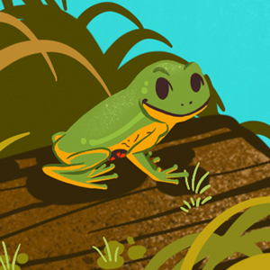

Características gerais
Existem 7830 espécies de anfíbios no mundo, o nome do grupo vem do grego amphi: duplo; bio: vida, são animais que, apesar de viverem na terra, dependem diretamente do ambiente aquático para sobreviver e reproduzir. De modo geral são mais ativos depois que o sol se põe, o que evita que a água do seu corpo evapore. Além de respirar pelos pulmões a pele úmida e fina dos anfíbios também auxilia na respiração, assim eles conseguem captar mais oxigênio, tanto na terra quanto na água.
Você já prestou atenção aos sons de uma floresta a noite? Ou mesmo um quintal com algumas árvores? Se sim, provavelmente deve ter ouvido um sapo ou perereca coaxar. Este comportamento de canto ou vocalização é realizado apenas pelos machos. Graças a um saco vocal que inflam de ar, os machos de sapos, rãs e pererecas conseguem emitir sons. Cada espécie possui o seu próprio padrão e é através desse canto que os machos atraem as fêmeas para a reprodução. O canto também pode servir para demarcar o território e afastar outros machos.
Quando o macho consegue chamar atenção da fêmea e ela o aceita, ele se posiciona acima da fêmea abraçando-a, este momento é chamado de amplexo, é um abraço nupcial que deixará as cloacas do macho e da fêmea mais próximas, possibilitando a fecundação. Em grande parte dos anfíbios a fecundação é externa, ou seja, a fêmea deposita os óvulos na água e o macho deposita os espermatozóides por cima deles, ocorrendo a formação dos embriões.
A maioria dos anfíbios tem uma fase larval aquática, chamada de girino. A respiração deles é semelhante à dos peixes, através de brânquias. Mas nem todos os anfíbios tem girinos, alguns já nascem como uma miniatura, idêntica ao anfíbio adulto.
Alguns sapos, rãs e pererecas são capazes de produzir substâncias consideradas venenosas. Algumas pererecas verdes produzem uma toxina em sua pele que as deixa com sabor ruim ou que irrita o estômago do predador. Uma serpente por exemplo, que engolir o animal inteiro, acaba vomitando e a perereca consegue sobreviver. Alguns sapos como o comum sapo cururu tem grandes glândulas na cabeça que produzem uma substância leitosa e que é liberada quando se pressiona a glândula, com as mãos ou com uma mordida, por exemplo. O veneno pode causar intoxicação, convulsão e até a morte em caso de ingestão, comum em cães que acabam atacando o anfíbio. Algumas rãs também produzem substâncias irritantes, semelhantes à pimenta. Tocar no animal e depois levar a mão aos olhos, nariz ou boca pode causar bastante desconforto.
Uma outra curiosidade sobre os anfíbios é a capacidade de fingir de morto. Como um truque que você ensina ao seu cachorro, os anfíbios conseguem diminuir os batimentos do coração, relaxam os músculos e permanecem imóveis. O comportamento é chamado de tanatose e pode fazer com que o predador perca o interesse neles como alimento, já que uma presa morta pode já estar em decomposição ou ter algum tipo de doença.
Grupos
SAPOS, RÃS E PERERECAS
(Anura Ou Salientia)
É o mais numeroso grupo dos anfíbios e o Brasil é um ótimo representante: o país que possui a maior riqueza de espécies.
Os sapos tem a pele rugosa, áspera e mais seca, patas curtas e duas grandes glândulas na cabeça (glândulas paratóides) que possuem um veneno cardiotóxico. Normalmente eles se movimentam pelo chão, ou seja, são terrestres.
As pererecas tem a pele mais lisa e úmida. Discos adesivos nas pontas dos seus dedos permitem que grudem em folhas, escalem árvores (arborícolas) e paredes.
As rãs tem a pele bastante lisa e escorregadia. Os dedos são finos e longos e possuem membranas entre eles (chamadas interdigitais) que auxiliam na natação. Vivem em banhados e lagoas e algumas são comestíveis.
COBRAS-CEGAS
(Gymnophyona ou Apoda)
Informações: Apenas 32 espécies conhecidas no Brasil. São muito difíceis de encontrar e geralmente são confundidas com grandes minhocas e alguns répteis. Não possuem patas e seus olhos são muito reduzidos. As cobras-cegas vivem debaixo da terra em galerias que elas mesmas escavam.
Salamandras
(Urodela ou Caudata)
Informações: Apenas cinco espécies descritas para o Brasil, todas da Amazônia. Sua pele é lisa, e sua forma é muito semelhante à de uma lagartixa, tendo o corpo alongado e braços e pernas curtos.